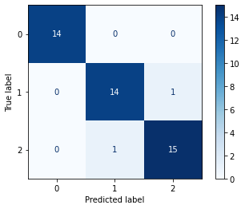

Este componente é um classificador sentenças multiclasse baseado nos pacotes de Embeddings GloVe disponiblizado pela Stanford para a lngua inglesa e pelo NILC-São Carlos para a língua portuguesa.
Espera-se como entrada para o componente uma tabela com colunas que representam valores numéricos, categóricos ou de data. Os valores de data devem ser removidos ou selecionados para codificação ordinal para que o modelo consiga processá-los. A tabela deve ser do tipo Comma-separated values (.csv)
A seguir são listados todos os parâmetros utilizados pelo componente:
- Coluna de entrada:
feature(Obrigatório).
Seu modelo utilizará para treinamento a coluna selecionada. - Coluna alvo:
feature(Obrigatório).
Seu modelo será treinado para prever os valores do alvo. - Arquivo de pesos:
string(Obrigatório).
É possível passar o arquivo comprimido em (.zip) ou não no formato (.txt) no experimento. Caso não seja possível o componente tentará descomprimir o arquivo antes." - Idioma:
string, {"ingles","portugues"}, padrão:"ingles"(Obrigatório).
Idioma em que os stopwords pertencem. Deve ser o mesmo utilizado no dataset. - Gráficos a serem ignorados:
string, {"Dados de Treino","Matriz de Confusão","Métricas Comuns","Curva ROC","Tabelas de Dados","Performance Batch Treinamento","Performance Época Treinamento","Performance Batch Validação","Performance Época Validação"} (Obrigatório).
Diversos gráficos são gerados ao executar o treinamento e validação do modelo, selecione quais não devem ser gerados. - Tamanho do batch de treinamento:
integer(Obrigatório).
O tamanho do batch de treinamento interfere na quantidade de dados que irá atualizar o modelo por backpropagation. Se muito grande pode gerar esoturos memória. - Tamanho do batch de inferência:
integer(Obrigatório).
O tamanho do batch de inferência diz a quantidade de resultados que podem ser calculados em uma operação. Se muito grande pode gerar esoturos memória. - Número de épocas:
integer(Obrigatório).
Quantidade de vezes que todos os dados serão vistos durante o treinamento. É considerado também para a recuperação de pesos pré treinados. - Acúmulo de batchs:
integer(Obrigatório).
Estratégia para atualizar os pesos não em todos os batchs mas a cada uma certa quantidade sem passar muitos batchs por vez durante o treinamento. - Taxa de aprendizado:
number(Obrigatório).
Velocidade em que o algorítimo irá aprender. - Semente de aleatoriedade:
integer(Obrigatório).
Semente para replicação dos resultados. - Dimensão das camada escondidas:
integer,multiple, {1000,500,300,200,100,50,20,10} (Obrigatório).
Dimensão da camadas escondidas da rede neural de classifcação. - Função de ativação:
string, {"relu","tanh"} (Obrigatório).
Função de ativação utilizada nas camadas ocultas da MLP. - Dimensão dos vetores Glove:
integer, {50,100,200,300,600,1000} (Obrigatório).
Dimensão dos vetores Glove pré treinados. Opções do inglês:50,100,200,300. Opções do português:50,100,300,600,1000. - Utilizar GPUs?:
boolean(Obrigatório).
Em caso positivo irá utilzar a GPU senão utilizará as CPUs. Se não houver GPU disponível irá utilziar CPUs. - Checagem do conjunto de validação:
integer(Obrigatório).
Irá interferir nos dataframes e gráficos de performance do conjunto de validação. Quanto menor, mais detalhes, porém mais lento (múltiplas inferências) - Mostrar informações do modelo:
boolean(Obrigatório).
Informações automáticas disponibilizadas pelo Pytorch Lightning. - Taxa de atualização da barra de progresso do modelo:
integer(Obrigatório).
Serve para acompanhar o a loss do modelo enquanto treina. Interssante ser bastante alto no momentoda implantação, pois não é necessário.
As métricas de performance tem o propósito de ajudar o usuário a avaliar a performance do modelo. Essas métricas variam de acordo com o tipo de problema, tal como: classificação, regressão, agrupamento, entre outros.
- Acurácia: Indica uma performance geral do modelo. Dentre todas as classificações, quantas o modelo classificou corretamente.
- Recall: Dentre todas as situações de classe positivo como valor esperado, quantas estão corretas.
- F1-Score: Média harmônica entre precisão e recall.
- Suporte: Número de ocorrências de cada classe esperadas
- Matriz de confusão: Tabela que mostra as frequências de classificação para cada classe do modelo
- Curvas de peformance: Monitoram as curvas de perda e acurácia durante o treino e validação para batchs e para épocas.
O retorno durante a experimentação ajuda o usuário a analisar tanto métricas distintas de forma visual, como a distribuição dos dados e os dados brutos ao final da execução. Sendo assim, é possível visualizar diversos retornos para este componente como os listados a seguir:
- Matriz de confusão
Apresenta a matriz de confusão. É possível obsersar relações entre os acertos e erros das cada classe.  - Métricas comuns
Apresenta métricas comuns utilizadas para avaliar modelos de classificação, como por exemplo: precision e recall. - Curva ROC
Apresenta um gráfico da Curva ROC. Esse gráfico permite avaliar a performance de um classificador binário para diferentes pontos de cortes. A métrica AUC (Area under curve) também é calculada e indicada na legenda do gráfico. Se a variável resposta tiver mais de duas categorias, o cálculo da curva ROC e AUC é feito utilizando o algoritmo one-vs-rest, ou seja, calcula-se a curva ROC e AUC de cada classe em relação ao restante.
- Tabela dos dados
Apresenta visualização dos dados após o treinamento do modelo com a variável resposta e dados sobre o modelo. - Performance de treino por batch
Comportamento da acurácia e da função de perda por batch na etapa de treino.
- Performance de treino por época
Comportamento da acurácia e da função de perda por época na etapa de treino. - Performance de validação por batch
Comportamento da acurácia e da função de perda por batch na etapa de validação. - Performance de validação por época
Comportamento da acurácia e da função de perda por época na etapa de validação.
O retorno durante a implantação se refere a tabela com os valores preditos para o atributo alvo e as probabilidades de cada classe. Sendo que, cada linha da tabela se refere a um registro enviado ao modelo.